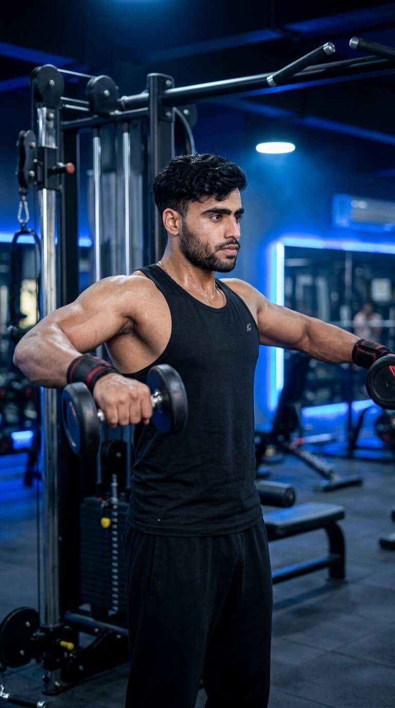

Primary Muscle
Lateral Deltoids
Build Wider Shoulders, Improve Shoulder Definition & Isolate the Side Deltoids
The Dumbbell Lateral Raise is an isolation shoulder exercise that primarily targets the lateral deltoids while also engaging the anterior deltoids, supraspinatus, upper trapezius, and core stabilizers. Raising the dumbbells out to the sides helps build broader shoulders, improve shoulder definition, enhance upper-body symmetry, and develop balanced shoulder strength.

Lateral Deltoids
Dumbbells
Beginner
Isolation
Discover which muscles are primarily responsible for the Dumbbell Lateral Raise and which supporting muscles help stabilize the shoulders, control the movement, and improve overall shoulder strength throughout each repetition.
Side Shoulders
Front Shoulders
Rotator Cuff
Upper Back & Core
Discover how the Dumbbell Lateral Raise helps build wider shoulders, improve shoulder definition, strengthen the side deltoids, and create a balanced upper-body physique through focused isolation training.
Directly targets the lateral deltoids to increase shoulder width, creating a broader upper-body appearance and a more balanced V-taper physique.
Isolating the side deltoids helps enhance shoulder shape, muscle separation, and overall upper-body aesthetics.
Training each arm independently encourages balanced shoulder development and helps reduce side-to-side strength differences over time.
Strengthens the muscles responsible for stabilizing the shoulder joint, promoting better control during both isolation and compound upper-body exercises.
The isolation nature of the exercise makes it easier to focus on contracting the lateral deltoids, improving muscle awareness and training quality.
Regularly performing the Dumbbell Lateral Raise with proper technique and progressive overload helps maximize lateral deltoid growth and long-term shoulder development.
Follow these step-by-step instructions to perform the Dumbbell Lateral Raise with proper posture, controlled movement, and continuous tension to maximize lateral deltoid activation and build broader shoulders.
Hold a dumbbell in each hand with your arms resting naturally by your sides. Stand with your feet about shoulder-width apart and maintain a slight bend in your elbows.
Keep your palms facing inward and avoid locking your elbows before starting the movement.
Tighten your core, keep your chest lifted, and maintain a neutral spine. Avoid leaning forward or backward as you prepare to raise the dumbbells.
Keep your body still throughout the exercise so only your shoulder joints create the movement.
Lift the dumbbells out to your sides in a smooth arc until your upper arms are approximately parallel to the floor. Keep a slight bend in your elbows throughout the movement.
Lead the movement with your elbows instead of your hands to maximize lateral deltoid activation.
Briefly pause when the dumbbells reach shoulder height while maintaining tension in the side deltoids. Keep your shoulders relaxed and avoid shrugging.
Stop when your arms reach shoulder level instead of lifting higher with your traps.
Slowly lower the dumbbells back to the starting position while maintaining control and continuous tension in your shoulders. Repeat for the desired number of repetitions.
Resist gravity during the lowering phase instead of letting the dumbbells drop. This improves muscle growth and shoulder control.
Avoid these common technique mistakes to maximize lateral deltoid activation, reduce unnecessary trap involvement, and perform the Dumbbell Lateral Raise safely and effectively.
Using momentum by swinging your body reduces shoulder activation and shifts the workload away from the lateral deltoids, making the exercise less effective.
Use a lighter weight and raise the dumbbells with slow, controlled movement while keeping your torso stable throughout every repetition.
Lifting your shoulders toward your ears causes the upper trapezius to dominate the movement, reducing emphasis on the lateral deltoids.
Keep your shoulders relaxed and focus on lifting with your elbows while maintaining constant tension in the side deltoids.
Lifting the dumbbells well above shoulder height often increases trap involvement without providing additional benefit to the lateral deltoids.
Raise the dumbbells until your upper arms are approximately parallel to the floor while keeping the movement smooth and controlled.
Choosing dumbbells that are too heavy often leads to poor technique, reduced range of motion, and excessive body momentum instead of proper shoulder isolation.
Select a weight that allows full control, proper range of motion, and continuous tension on the lateral deltoids throughout every repetition.
Apply these practical coaching cues to improve your Dumbbell Lateral Raise technique, maximize side deltoid activation, maintain strict form, and perform every repetition with greater control and precision.
Focus on raising your elbows instead of your hands. This helps place greater emphasis on the lateral deltoids while reducing unnecessary involvement from the forearms.
Imagine your elbows are pulling the dumbbells upward while your hands simply follow the movement.
Avoid shrugging your shoulders as you lift the dumbbells. Relaxed shoulders allow the lateral deltoids to perform more of the work.
Keep your shoulders down and away from your ears throughout every repetition.
Lift the dumbbells smoothly and lower them slowly to maximize time under tension and improve muscle activation without relying on momentum.
The lowering phase is just as important as the lifting phase. Aim for a controlled two- to three-second descent.
The Dumbbell Lateral Raise is an isolation exercise. Using lighter weights with strict form is far more effective than swinging heavy dumbbells.
Focus on feeling your side deltoids working throughout the entire range of motion before increasing the weight.
Progress from learning proper lateral raise mechanics to building stronger side deltoids, improving shoulder control, and advancing to more challenging shoulder isolation variations while maintaining strict technique.
Begin with light dumbbells and learn proper body positioning, elbow path, shoulder control, and movement mechanics before increasing the weight.
Strict form, stable torso, relaxed shoulders, controlled tempo, and full shoulder-height range of motion.
Perform controlled repetitions using moderate weights while minimizing momentum and maintaining constant tension on the lateral deltoids throughout every rep.
Smooth repetitions, balanced arm movement, shoulder stability, controlled tempo, and consistent muscle activation.
Once strict technique is mastered, gradually increase the dumbbell weight while preserving full control, proper range of motion, and continuous side deltoid tension.
Progressive overload, strict form, controlled movement, shoulder stability, and maintaining perfect technique with heavier weights.
After mastering the Dumbbell Lateral Raise, progress to advanced variations such as the Cable Lateral Raise, Leaning Lateral Raise, Seated Lateral Raise, or Single-Arm Cable Raise to continue improving shoulder size and definition.
Greater shoulder isolation, continuous tension, improved muscle symmetry, progressive overload, and selecting variations that match your training goals.
Find clear answers to common questions about the Dumbbell Lateral Raise, including proper technique, muscles worked, shoulder position, training frequency, and progression.
The Dumbbell Lateral Raise primarily targets the lateral deltoids while also engaging the anterior deltoids, supraspinatus, upper trapezius, and core stabilizers to maintain proper posture throughout the movement.
Raise the dumbbells until your upper arms are approximately parallel to the floor. Going much higher usually increases upper trapezius involvement without providing additional benefit to the side deltoids.
No. Maintain a slight bend in your elbows throughout the movement. This position helps reduce stress on the elbow joints while allowing better control of the dumbbells.
Yes. Beginners should start with light dumbbells, focus on strict technique, avoid swinging the weight, and gradually increase resistance as shoulder strength and control improve.
Most people benefit from performing the Dumbbell Lateral Raise one to three times per week as part of a balanced shoulder or upper-body training program, while allowing adequate recovery between sessions.
The ideal number of sets and repetitions depends on your goals and experience. For general muscle growth, performing 2–4 working sets of 10–15 controlled repetitions with strict technique is a common and effective recommendation.
Explore other shoulder exercises that complement the Dumbbell Lateral Raise and help you build wider deltoids, improve shoulder strength, enhance stability, and develop balanced upper-body performance.


Continue building stronger, more balanced shoulders with step-by-step exercise guides covering proper technique, muscles worked, common mistakes, expert coaching tips, and progressive training strategies.